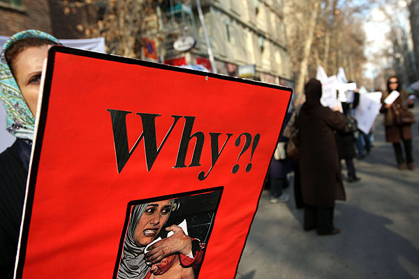
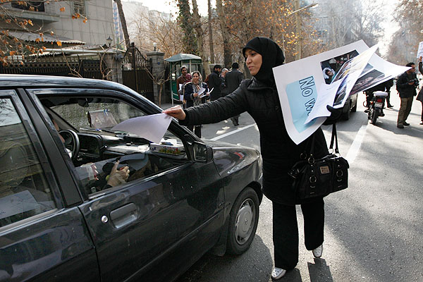
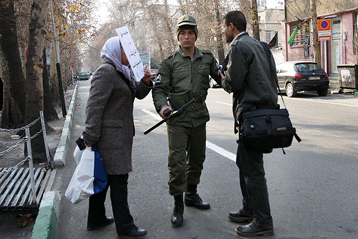
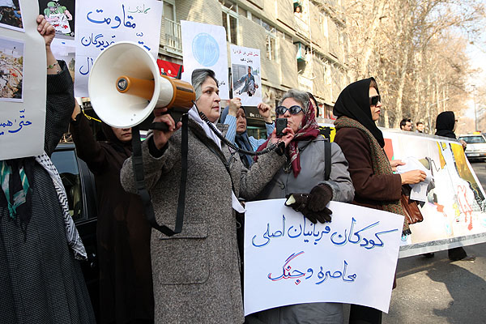
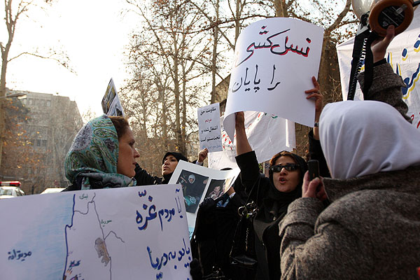
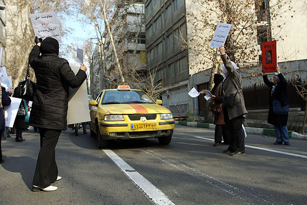

پذيرش > سایت نوشته ها > زمانی که اعتراض به کشتار فلسطینی ها هم انحصاری حکومت می شود
 گزارشی از حمله لباس شخصی ها به صلح طلبان ایرانی گزارشی از حمله لباس شخصی ها به صلح طلبان ایرانی

 زمانی که اعتراض به کشتار فلسطینی ها هم انحصاری حکومت می شود زمانی که اعتراض به کشتار فلسطینی ها هم انحصاری حکومت می شود
23 دی 1387 - کانون زنان ایرانی/بهمن احمدی امویی،عکس مریم مجد - نسخه قابل چاپ

ساعت 11 امروزصبح (بیست و دوم دی ماه )گروهی از فعالان زن مقابل سفارت فلسطین در تهران با پلاکاردهایی که بر آنها شعارهایی در محکومیت حمله اسرائیل به غزه نوشته شده بود با یک بلند گوی دستی شعار صلح و پایان دادن به نسل کشی در غزه را فریاد می زدند . آنها به دعوت گروه مادران صلح خود را به آنجا رسانده بودند . در ضلع غربی خیابان فلسطین تجمع کرده بودند و به رهگذران و خودروهایی که از خیابان عبور می کردند بروشور می دادند و از آنها می خواستند جنایت اسرائیل در غزه را محکوم کنند . مردانی از فعالان جنبش های اجتماعی و سیاسی نیز دقایقی بعد به آنها ملحق شدند .

تعدادی عکاس روبروی در سفارت فلسطین که چند سرباز و افسر نیروی انتظامی هم آنجا ایستاده بودند ،از معترضین عکس و فیلم می گرفتند .
جمعی از حقوقدانان ، اعضای کانون نویسندگان ،برخی از اعضای جنبش زنان ایران و روزنامه نگاران نیز به دعوت جمعیت مادران صلح برای دفاع از مردم غزه به مقابل سفارت فلسطین در تهران آمده بودند و خواستار پایان نسل کشی اسرائیل در غزه شدند .
رییس موزه صلح که خود یک جانباز جنگ است، فریبرز رییس دانا، اقتصاددان و عضو کانون نویسندگان ، شرف الدین، رییس سازمان دفاع مقدس، احمدزاده، فیلمنامه نویس جنگ ، سیمین بهبهانی، شاعر و حبیب الله پیمان از فعالان سیاسی ایی بودند که در میان جمعیت حضور داشتند. بر پلاکادرهایی که در دست این جمعیت بود ، جملاتی چون آیا باید فلسطینی ها را به دریا ریخت؟ و جنگ و خونریزی اسرائیل محکوم است ، دیده می شد . اغلب سخنرانان این جمع هم همراهی آمریکا با اسرائیل را در این نسل کشی محکوم کردند .

حدود ساعت یازده و نیم شعارهای "الله کبر ، خامنه ای رهبر" در میان شعارهای صلح خواهانه معترضین شنیده شد . تعدای از لباس شخصی ها که مشخص بود روابط حسنه ای با پلیس دارند کمی بالاتر از معترضان جمع شده بودند و مرتب خود را به آنها نزدیک می کردند . آنها با شعارهای" مرگ بر امریکا" و "خامنه ای رهبر" مانع شنیده شدن گفته های سخنرانان می شدند که با یک بلند گو دستی صحبت می کردند . صدای بلند گو به حدی ضعیف بود که به راحتی شنیده نمی شد . چه برسد به این که با شعارهای لباس شخصی ها که با تمام توانشان فریاد می زدند ،در هم بیامیزد .

زمانی مهندس سحابی در گفت و گو با خبرنگاری گفته بود که" برخی از تماشاچیان و نمایندگان در مجلس اول برای جلوگیری از سخن گفتن آنها مرتب شعار الله اکبر ، خمینی رهبر سر می دادند و صلوات می فرستادند . همینجوری هم شد که با پررویی و لات بازی همه را از صحنه بیرون کردند ."
آیا پس از این همه سال صاحبان این طرز تفکر راه های جدیدتری به ذهنشان نمی رسد ؟ شاید هم چون از این روشهای قدیمی نتایج مورد نظر خود را گرفته اند ،همان ها را تکرار می کنند.
تعدادی از انها با شکم های برآمده و گردن های کلفت و چفیه بر گردن و شلوارهای نظامی ، در حالی که شعار می دادند ، با تنه زدن به زنان و مردان خود را به میانه جمعیت رساندند . معلوم بود که چندتایی از آنها تازه از محل کارشان به اینجا برای ماموریت آمده بودند . برای همین هم وقت نکرده بودند لباس های نظامی شان را عوض کنند . انگار با بچه های محل هم تماس گرفته بودند و یک جمعی را تشکیل داده بودند .
تعدادی از زنان ضمن همراهی نشان دادن با شعار " مرگ بر اسرائیل " لباس شخصی ها ، سعی کردند تا حدودی مانع بر هم خوردن جو و از بین رفتن فضای ارام حاکم بر مراسم شوند . اما به نظر می رسید آنها برای بر هم زدن مراسم ،به سبک خودشان،عمل می کنند و توجهی به اطرافشان نداشتند .
صدای " حاجی به گوشم " از پشت سرم شنیده شد. یکی از آنها داشت احتمالا با فرمانده و یا یکی از بالادستی هایش صحبت می کرد .
جمعیت برای جلو گیری از برخورد به ضلع شرقی خیابان رفتند و لباس شخصی ها در ضلع غربی . دو گروه روبروی هم قرار گرفته بودند . خانمی گفت : " ما که نمی توانیم سر موضوع قتل عام فلسطینی ها با هم کنار بیائیم ، پس چه امیدی به کارهای دیگر است ."

جمعیت شعار " صلح " سر می داد و لباس شخصی ها و نیروهای امنیتی شعار " مرگ بر صلح طلب" . کسانی می خواستند که توجهی به لباس شخصی ها نکنند و رویشان را به طرف سفارت فلسطین برگردانند ،شاید که آنها را با بی اعتنایی خود از میدان به در ببرند . اما انگار نه انگار !گوش آنها بدهکار این حرفها نبود.
یکی از تظاهر کنندگان گفت:" فکر کنم همان هایی هستند که برای مبارزه با اسرائیل و عملیات انتحاری ثبت نام کرده اند . اما چون جرات رفتن به آنجا را ندارند تلافی اش را سر ما درمی آورند . "
کمی دورتر از جمعیت یکی - دوتا از لباس شخصی ها به راحله عسگری زاده عکاس وب سایت "تغییر برای برابری" حمله کردند. او را زدند و دوربینش را گرفتند . جمعیت به دور آنها حلقه زده بود . یکی می گفت : "به چه حقی با مردم اینگونه برخورد می کنید ؟ یکی هم موضوع پول نفت را به میان کشید و این که آنها با پول نفت اجیر شده اند . کسی هم که خودش را پلیس معرفی می کرد از جمعیت خواهش می کرد خودشان را کنترل کنند تا دوربین این عکاس را پس بگیرد . اما لباس شخصی ها توجهی به او نمی کردند ، حالا یا واقعا زورش به لباس شخصی ها نمی رسید و یا سعی می کرد نقش یک پلیس خوب را بازی کند . "
جمعیت برای جلوگیری از هرگونه برخورد و درگیری ، یکی دوبار محل استقرار خود را تغییر داد . در مقابل لباس شخصی ها هم مرتب آنها را تعقیب می کردند .
در میان لباس شخصی ها یک مرد ژنده پوش با لباس هایی بسیار کثیف مرتب شعار مرگ بر اسرائیل می داد . از او پرسیدم تو هم می خواهی با اسرائل بجنگی ؟ فقط خندید . با خودم گفتم شاید پولی به اوداده اند که بیاید . به یکی از بچه های عکاس گفتم بد نیست از او هم یک عکسی بگیرد .
چندتایی از لباس شخصی ها مرتب با الفاظ رکیک زنان را خطاب قرار می دادند . به نظر می رسید آنها می خواهند هر طور شده کار را به درگیری برسانند . یادم آمد که همین چند روز پیش قشقاوی ، سخنگوی وزارت خارجه در باره کسانی که به محل کار و خانه شیرین عبادی یورش برده بودند و بر در و دیوار خانه اش شعارهای توهین آمیز نوشته بودند ، گفته بود که آنها تعدادی دانشجو با نظرات مخالف خانم عبادی بودند ،خانم عبادی و دوستانشان باید تحمل شنیدن سخنان منتقدین را داشته باشند . " ایا اینها هم از همان دانشجویان بودند ؟ نمی دانم . اما هر چه هست انگار فقط منتقدین حکومت باید تحمل شنیدن نظرات مخالف خود را داشته باشند و نه خود حکومت.
زنی از میان جمع فریاد زد :" بابا این چه مملکتی است ؟ یک روز می گویند اسرائیل جنایت می کند ، شیرین عبادی حمایت می کند . یک روز هم که ما شعار پایان جنگ و جلوگیری از خون ریزی در غزه توسط اسرائیل را فریاد می زنیم ، باز هم ما را می زنند . " و کسی دیگر از میان جمع گفت :"باید هم این کار رابکنند . چون تا حالا افرادی مثل ما را همراه اسرائیل و حقوق بگیر آمریکا و غرب خطاب می کردند . حالا نمی توانند مخالفت ما را با اسرائیل ببیند و گرنه تمام دروغ هایشان نقش بر اب می شود ."
معلوم بود کاری هم از آن کسی که خود را پلیس معرفی کرد برای باز پس گیری دوربین عکاس که به سختی هم کتک خورده بود بر نمی آید . شخصی ای را که دوربین را گرفته بود پیدا کردیم و از او خواستیم آن را پس بدهد . شروع به داد و فریاد کرد و با فحش دادن چندتایی از همکارانش را دور خود جمع کرد . یک دفعه یکی از انها با مشت به بینی من کوبید . خون از صورتم جاری شد. یکی دیگرشان قوطی اسپری فلفل را به طرفم گرفت و برصورت و چشم هایم پاشید. دو- سه ثانیه که گذشت احساس کردم چشم ها و صورتم می سوزد . یکی از مادران صلح برایم دستمال کاغذی اورد و خون ها را پاک کرد . وارد یک مغازه شد م و آبی به سرو صورتم زدم تا شاید از سوزش چشمهایم کم کند . اما بدتر شد . به زحمت می توانستم ببینم . دو سه نفر از تظاهر کنندگان مرتب به من توصیه می کردند که بهتر است زود محل را ترک کنم . بعد از چند دقیقه که با چند نفر از مادران صلح به طرف شمال خیابان رفتیم ،آنجا هم نیروهای لباس شخصی با زنان درگیر شده بودند . همان پلیس که نقش پلیس خوب را بازی می کرد ، با یکی دوتا از زنان درگیر شده بود . ظاهرا دیگر نمی توانست بیش از این نقش بازی کند و آیدا سعادت ،روزنامه نگار را نیز مضروب کرده بودند . خدیجه مقدم از فعالان کمپین مرتب می گفت :" شناختمش .او آقای ... یکی از بازجوهای پرونده زنان است . برویم پزشکی قانونی و با گرفتن گواهی ضرب و جرح ، از آنها شکایت کنیم ."
یکی گفت :" بابا کدام قانون ؟ آن همه دانشجو را در کوی دانشگاه زدند و کشتند آخرش فقط یک سرباز را به جرم دزدیدن یک ریش تراش محکوم کردند . مگر تا به حال کم شکایت کردیم ، فایده ای داشته است؟ این جا که قانون حاکم نیست . "

یکی از لباس شخصی ها هم مدام در حال فیلم برداری بود . کسانی دست تکان دادند و علامت پیروزی را با انگشتان خود به آنها نشان دادند . شاید حالا دارند فیلم کارهای امروزشان را نگاه می کنند . بالاخره باید برای کارهایی که می کنند سند و مدرک داشته باشند . تا حقوقی را که به قول آن آقا از بابت نفت می گیرند ، حلال باشد و با راحتی خاطر نوش جان کنند . در ادامه مراسم خانم ها برای نشان دادن اعتراض خود نسبت به برخورد اسرائیل با مردم غزه همگی در یک اقدام نمادین به سازمان انتقال خون رفتند و خون دادند . تعدادی از لباس شخصی ها دست از تعقیب آنها حتی به هنگام خون دادن برنداشتند.
وقتی نظر یکی از تجمع کنندگان را در باره برخورد لباس شخصی ها جویا شدم ،گفت :
"ماموریت آنها این است که مانع هرگونه تظاهراتی از سوی منتقدین حکومت حتی نسبت به اسرائیل شوند . حکومت می خواهد همه مسائل را به نفع خود مصادره کند و حتی اعتراض به کشتار فلسطینی ها را هم موضوع انحصاری خود می داند ،درست مثل خیلی چیزهای دیگر."
در حاشیه :
به علت حمله لباس شخصی ها به عکاس ها فعلا عکسی از حمله پلیس ایران به طرفداران فلسطین و صلح طلب ها پیدا نکردیم.
کانون زنان ایرانی
ارسال به
بالاترین
،
توییتر
،
فریندفید
،
فیسبوک
در همين بخش :
 یک خبر تلخ؟ یک قانونشکنی؟ یک تصمیم بخشنامهای جدید؟ یک خبر تلخ؟ یک قانونشکنی؟ یک تصمیم بخشنامهای جدید؟
چرا بایست به سکسوالیته پرداخت؟ / نفیسه آزاد
آزارجنسی خانگی؛ «قربانی» نه، «نجات یافته»
زنان، بزرگترین بازندگان بهار عرب
سانسور از دیدگاه جنسیتی/الهه امانی
ديگر بخش ها :
طرح یک میلیون امضا
|
مقالات
|
سایت نوشته ها
|
اخبار
|
گزارش كمپين
|
گفت و گو
|
علیه سکوت
|
كوچه به كوچه
|
نامه های شما
|
گزارش ویژه
|
گفتگو با اعضا
|
ویژه سالگرد کمپین
|
تصویر برابری
|
دل آرام علی
|
تریبون
|
مقالات
|
تاریخ شفاهی
|
خارج از چارچوب
|
کتابخانه
|
درباره کمپین
|
کمپین در شهرها
|
کمپین در بند
|
صدای تغییر
|
ویژه 22 خرداد
|
لایحه حمایت از خانواده
|
گالری
|
عشا مومنی
|
امیر یعقوبعلی
|
خدیجه مقدم
|
راحله عسگری زاده و نسیم خسروی
|
پروین اردلان،جلوه جواهری، مریم حسین خواه، ناهید کشاورز
|
زینب پیغمبرزاده
|
سعیده امین، سارا ایمانیان، محبوبه حسین زاده، ناهید کشاورز و همایون نامی
|
احترام شادفر
|
نسیم سرابندی زاده،فاطمه دهدشتی
|
وبلاگ مهمان
|
پرونده خرم آباد
|
دستگیری ها
|
مریم مالک
|
پرستو اللهیاری
|
مهرنوش اعتمادی
|
سمیه رشیدی
|
Other Languages
|
همراهان
|
«فراخوان کمپین ده روز با بهاره هدایت»
| English
|